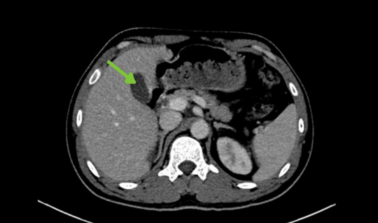

122 — U lành & áp-xe gan: hemangioma, FNH, adenoma / Benign liver lesions & Abscess
Tags: pattern:u-lanh-gan vung:gan
Mức chắc chắn (certainty): tổng hợp y văn (literature synthesis) — nhóm tự biên từ y văn mở, chưa gắn ca nguyên văn đơn lẻ.
1. Tổng quan — 3 u lành + 1 nhiễm trùng chết người nếu sót
- Hemangioma: đám rối mạch — ngấm nốt ngoại vi hướng tâm + T2 sáng rực + giữ thuốc muộn.
- FNH: tăng sản đáp ứng (không phải u thật) — sẹo trung tâm T2 sáng + ngấm sớm + giữ Primovist thì gan-mật (có tế bào Kupffer).
- Adenoma: nữ + thuốc tránh thai — chảy máu + mỡ + vỡ nguy hiểm, ngừng thuốc có thể teo.
- Áp-xe Klebsiella: sốt + đái tháo đường + hoại tử + viền ngấm (rim) + bia bắn đôi — dẫn lưu + kháng sinh + kiểm soát đường huyết (HbA1c 13% trong ca dưới!).
2. Gamut khối gan lành/viêm
- Nữ trẻ + sẹo + giữ Primovist: FNH — bỏ qua.
- Nốt ngoại vi hướng tâm + T2 sáng: hemangioma — theo dõi.
- Chảy máu + mỡ + thuốc tránh thai: adenoma — ngừng thuốc/mổ.
- Sốt + ĐTĐ + hoại tử + viền: áp-xe Klebsiella — dẫn lưu + tầm soát ĐTĐ.
3. Bảng 4 thực thể
| Thực thể (entity) | Hình ảnh | Chốt vào (rule-in) | Chốt loại (rule-out) | Gợi ý xác nhận |
|---|---|---|---|---|
| Hemangioma | Nốt ngoại vi hướng tâm + T2 sáng rực | Hướng tâm + giữ muộn | Washout → HCC | MRI Primovist |
| FNH | Sẹo T2 sáng + giữ Primovist | Giữ thuốc gan-mật + nữ trẻ | Thải thuốc → HCC/adenoma | Bỏ qua |
| Adenoma | Chảy máu + mỡ + nữ + thuốc | Mỡ + chảy máu | Gan xơ + washout → HCC | Ngừng thuốc, mổ khi > 5 cm |
| Áp-xe Klebsiella | Hoại tử + viền + bia đôi + sốt + ĐTĐ | Sốt + ĐTĐ + hoại tử | Không sốt + đặc → u | Dẫn lưu + HbA1c |

Khối hoại tử thùy phải + viền ngấm (BN ĐTĐ chưa chẩn đoán, HbA1c 13,1%). Nguồn: Alajab et al., Cureus 2026 Fig. 1, CC BY 4.0.4. Protocol
- MRI Primovist (FNH/HCC nhỏ) + CT 4 thì + siêu âm cản quang khi cần.
- Áp-xe: cấy máu + dẫn lưu + tầm soát ĐTĐ (HbA1c) mọi ca Klebsiella.
5. Cạm bẫy
- Adenoma vỡ chảy máu ổ bụng cấp — cấp cứu, đừng sinh thiết.
- Áp-xe amip vs vi khuẩn: amip đơn ổ + đi ngoài máu + quê dịch tễ — metronidazole.
- Hemangioma khổng lồ (> 4 cm) vỡ/chèn ép hiếm — mổ chọn lọc, không phải cấp cứu thường.
6. Tự lượng giá — Blind Quiz
Ca 1 — Sốt 39,4 + đường huyết 400s + khối hoại tử thùy phải. Đọc CT.
- Hỏi: hoại tử + viền + sốt + ĐTĐ = gì? Xét nghiệm nào bị bỏ sót? Dẫn lưu hay mổ?
Bấm để hiện đáp án
- Áp-xe Klebsiella: dẫn lưu + kháng sinh + tầm soát ĐTĐ (HbA1c) — nhiễm trùng nặng có thể là biểu hiện đầu của đái tháo đường chưa chẩn đoán.
- Nguồn: Alajab et al., Fig. 1, CC BY 4.0.
Ca 2 — Nữ 28 tuổi + khối gan + sẹo T2 sáng + giữ Primovist: chẩn đoán + có cần mổ? (Bảng mục 3.)
Bấm để hiện đáp án
- FNH: bỏ qua, không mổ (khác adenoma vỡ).
Bài liên quan chéo
- 100 – Tổng quan hệ Bụng
- 120 – Khối gan nền (nền lành vs xơ)
- 121 – LI-RADS (loại trừ HCC)
Không dùng để chẩn đoán độc lập khi chưa có người hướng dẫn.